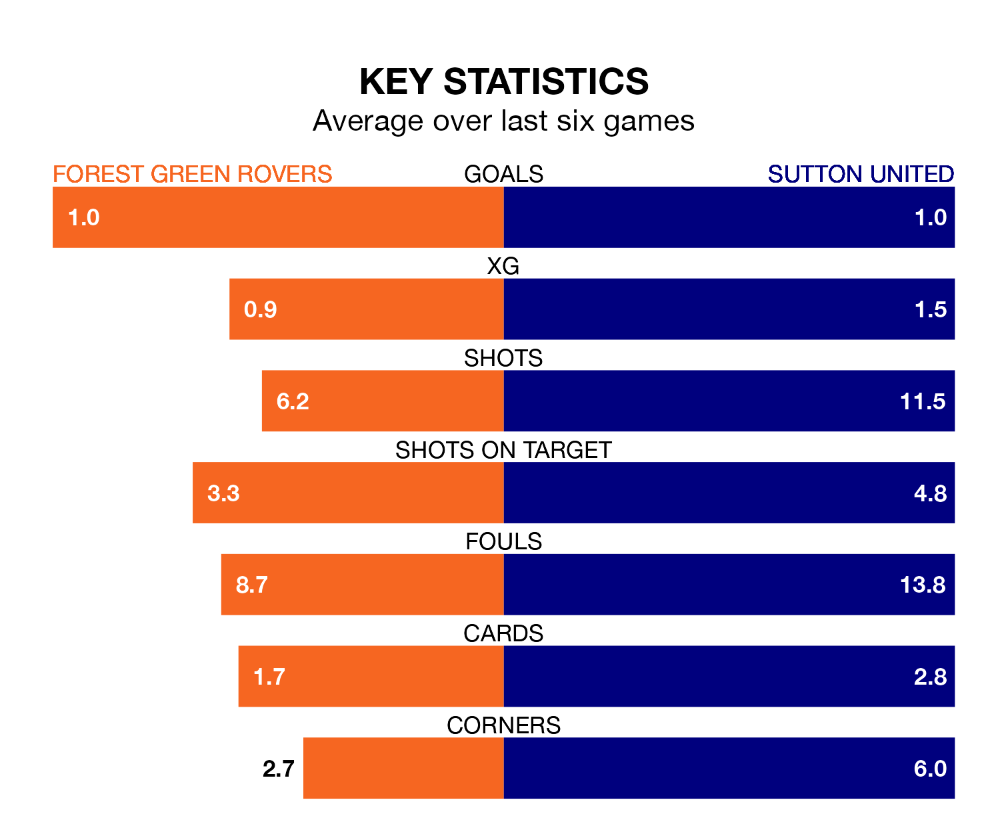

Struggling Forest Green Rovers face Sutton United at the Bolt New Lawn on Saturday looking to build on a win in their last league outing.
After securing all three points with a 2-0 victory over Bradford City on Tuesday, the Green sit 22nd in EFL League Two.
They travel to play a Sutton side 24th in the standings, who lost in their last match, 1-0 against Crewe Alexandra.
In the last 10 years, Forest Green and Sutton have played each other on six occasions. Forest Green won three of them, Sutton one, and they drew twice.
On average, the Green scored 1.3 goals and the Us 1.0 in those matches.
Their last meeting was on September 2, when Forest Green won 1-0 away.
Forest Green are in mixed form in EFL League Two, with three wins and a draw from their last six games.
With a win and two draws over that period, Sutton's form is worse – they have taken five points from 18, compared to Rovers' 10.
With 38 goals in 37 games so far this season, the Green are the league's second-lowest scorers with 1.0 goals per game. And they are conceding more than average, letting in 62 goals at a rate of 1.7 per game.
United are also below average scorers, with 1.1 goals per game, compared to a league average of 1.5. They have conceded 1.8 goals per game.
Saturday's match will be refereed by Ben Toner, who has taken charge of six EFL League Two games so far this season, issuing one red card and booking 32 players. He has awarded three penalties.
He is yet to oversee a match featuring either Forest Green or Sutton this season.
Updated: 15:10 (UTC), 15/03/24